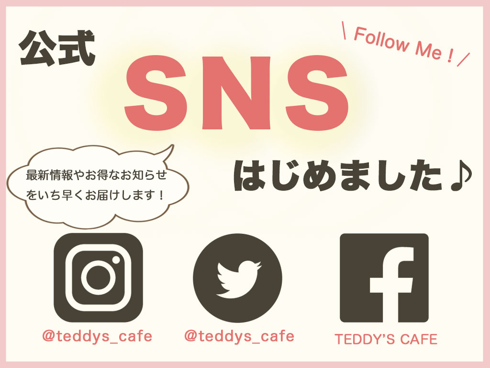

2023/1/2 〜 2023/1/8 約30h
HTML / CSS / jquery / Illustrator / Photoshop
ユーザーにとって操作が容易で、欲しい情報がどこにあるか直ぐに分かるような、よくある一般的な構成にしました。 私自身、飲食店のサイトを見る際、 ①操作が分かりやすく、メニューや価格、お店の場所や営業時間などの欲しい情報がすぐに得られる。 ②サイトの全体的なデザイン という順番でサイトの印象が決まります。
いくら②のサイトのデザインが凝られていてお洒落であっても、①の条件をクリアしていないとWebサイトを閉じてしまいます。 なので、そういったユーザーの離脱率が少なくなるよう、UI/UXを意識した構成にしました。
飲食店なので清潔感が感じられるような、全体的にシンプルなデザインにしました。
写真一つでサイトの印象が大きく変わるので、明るさや色味など、写真の修正・補正には特に力を入れました。 また、画像を多く取り入れる事で、お店の雰囲気が伝わりやすいようにしました。
修正例 →
・机の上の水の跡が気になったので削除しました。
・明るさと彩度を上げ、くっきりと仕上げました。
TEDDY'S CAFEのロゴをIllustratorで作成しました。 一目見てカフェのロゴだと分かるように、コーヒーカップとコーヒー豆のイラストを取り入れました。 カラーはコーヒーを連想させるような暗い茶色と白色でコントラストがはっきりとしたデザインにしました。
初めてサイトを訪れた人にお店の雰囲気を掴んでもらうため、大きめの画像をホームページトップに配置しました。 スライダーの移り変わりの時間をゆっくりに設定することで、ゆったりとした時間が流れるような雰囲気を表現しました。
情報が直ぐに手に入るように、お店に関する情報はトップページに集約しました。 文字にアニメーション効果をつけると読み込みに時間がかかってしまったりするので、シンプルなデザインにしました。
お店が新しく始める事の情報なので、目立つようにお店のイメージカラーの茶色を取り入れつつ、黄色やピンクの暖色系カラーで明るい印象になるようなデザインにしました。
トップページのスライダー同様、ゆったりとした雰囲気を表現したかったので、ページをスクロールしたら記事がフェードインするようにしました。
デフォルト時は商品画像と商品名のみを表示し、商品説明はマウスホバーした際に表示されるようにしすることで、ページ全体をスッキリと見せるようにしました。

・COMMENT・
意識したポイント
・UI/UX
ユーザーにとって操作が容易で、欲しい情報がどこにあるか直ぐに分かるような、よくある一般的な構成にしました。
私自身、飲食店のサイトを見る際、
①操作が分かりやすく、メニューや価格、お店の場所や営業時間などの欲しい情報がすぐに得られる。
②サイトの全体的なデザイン
という順番でサイトの印象が決まります。
いくら②のサイトのデザインが凝られていてお洒落であっても、①の条件をクリアしていないとWebサイトを閉じてしまいます。
なので、そういったユーザーの離脱率が少なくなるよう、UI/UXを意識した構成にしました。
・全体的なデザイン
飲食店なので清潔感が感じられるような、全体的にシンプルなデザインにしました。
・イメージ画像
写真一つでサイトの印象が大きく変わるので、明るさや色味など、写真の修正・補正には特に力を入れました。
また、画像を多く取り入れる事で、お店の雰囲気が伝わりやすいようにしました。
修正例 →
修正ポイント
・机の上の水の跡が気になったので削除しました。
・明るさと彩度を上げ、くっきりと仕上げました。
①ロゴ
TEDDY'S CAFEのロゴをIllustratorで作成しました。
一目見てカフェのロゴだと分かるように、コーヒーカップとコーヒー豆のイラストを取り入れました。
カラーはコーヒーを連想させるような暗い茶色と白色でコントラストがはっきりとしたデザインにしました。
②トップスライダー
初めてサイトを訪れた人にお店の雰囲気を掴んでもらうため、大きめの画像をホームページトップに配置しました。
スライダーの移り変わりの時間をゆっくりに設定することで、ゆったりとした時間が流れるような雰囲気を表現しました。
③トップページコンテンツ
情報が直ぐに手に入るように、お店に関する情報はトップページに集約しました。
文字にアニメーション効果をつけると読み込みに時間がかかってしまったりするので、シンプルなデザインにしました。
④バナー
お店が新しく始める事の情報なので、目立つようにお店のイメージカラーの茶色を取り入れつつ、黄色やピンクの暖色系カラーで明るい印象になるようなデザインにしました。
⑤About
トップページのスライダー同様、ゆったりとした雰囲気を表現したかったので、ページをスクロールしたら記事がフェードインするようにしました。
⑥Menu
デフォルト時は商品画像と商品名のみを表示し、商品説明はマウスホバーした際に表示されるようにしすることで、ページ全体をスッキリと見せるようにしました。